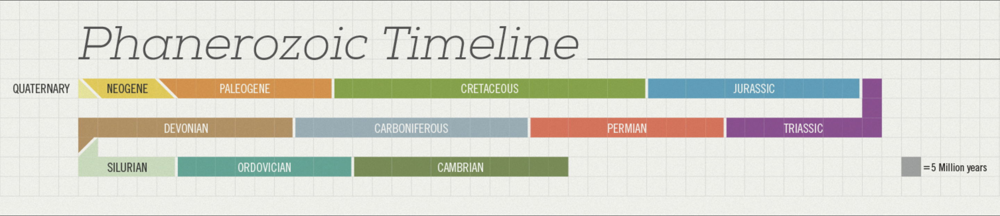

This is a good example of informed visualization about history of life. This gorgeous infographic by Juan Martinez defines each geological era of the world, the changing shape of the land continents, and includes timelines, life milestones and mass extinction events.
1. Reliable Information
Here is the screenshot of this info graph’s references. As you can see, the information source is published book, therefore what on the graph is accurate.
2. Relevant Pattern
Since this isn't a data visualization, there is no pattern shown on the graph.
3. Exploration
Different parts of the graph give us different information.
Colorful Circle
The main structure of the graph is the big colorful circle. With clear label, users can learn how many millions of years are different ages away from the present day. Additionally, after ecery period, the lend thickness will increase, so user won’t confused which point to start. (the thinner the land is, the early is the period.) For every small period, there is different landscapes and representative animals or plants. You can also learn when are mass extinction events happened and during what ages.
Timeline
You may have noticed that the background is graph paper which is constructed of many squares. Such background is great to indicate the length of different geographic ages. With different color marked, users can directly feel the length.

Milestone
Combined with the colorful circle and timeline, the milestone shows the three that most representative spices appear on the earth in different ages. The list of spices all have small colored circle marks, which make the list pretty and easy to follow.